Rodinná kronika
Fotogalerie vzpomínek
Historicky laděná galerie pro kroniku, staré fotografie a rodinné či obecní vzpomínky.
Vzhled připomíná album s nalepenými snímky na zažloutlém papíře. Stačí jen měnit názvy souborů,
popisky a případně přidávat další položky.
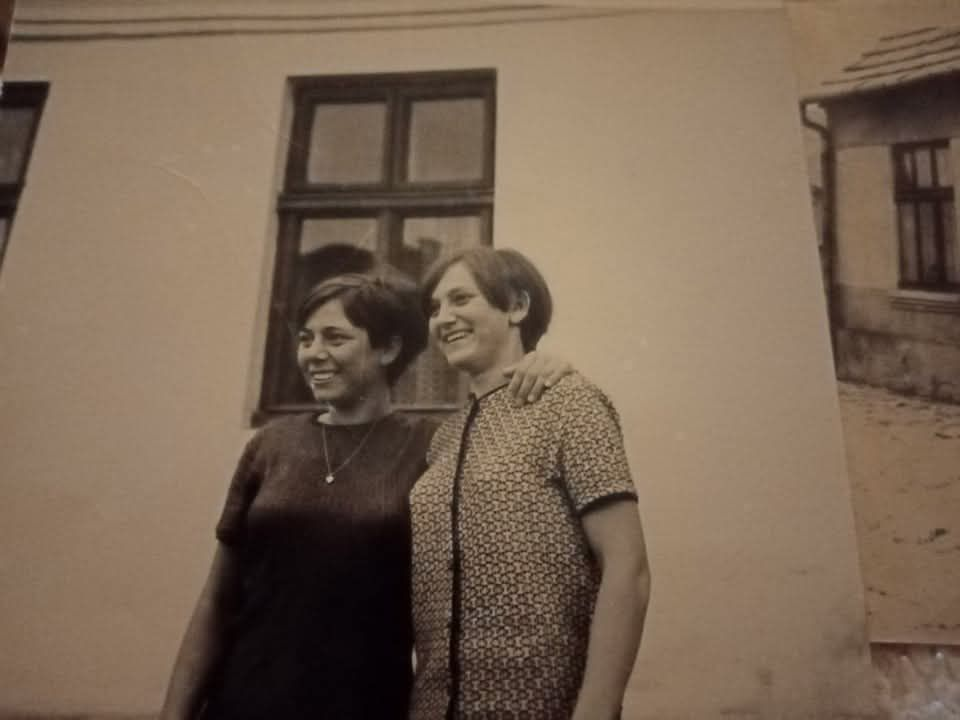
Dvě mladé ženy před domem
Portrétní snímek s přirozenou domácí atmosférou.
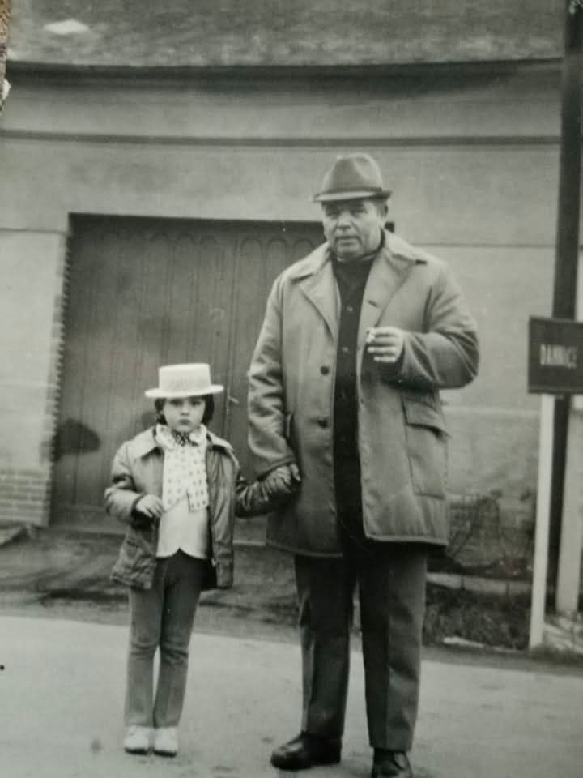
Děvčátko s mužem
Rodinný moment zachycený před stavením.
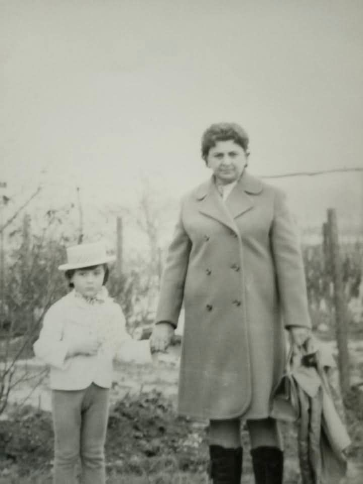
V zahradě
Jednoduchý snímek s jemně dokumentární náladou.
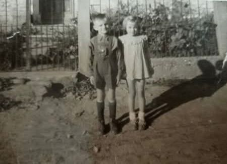
Dvě děti
Dětský snímek s typickou kompozicí domácího alba.
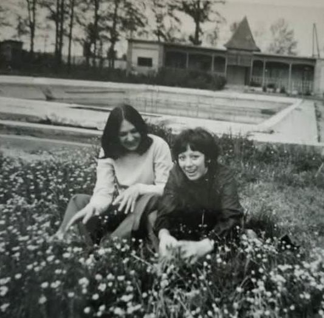
U vody a trávy
Volný čas a klidná atmosféra dávného léta.
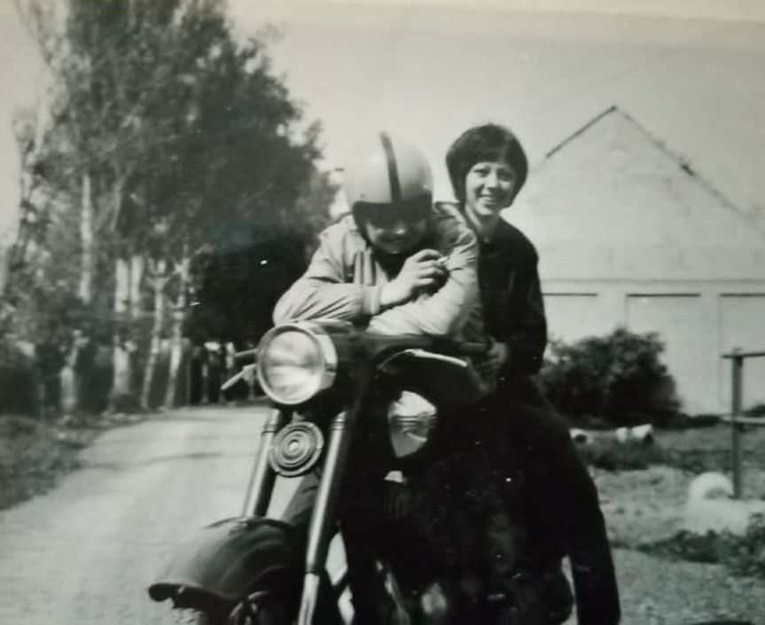
Na motorce
Živý, radostný snímek s pohybem a tehdejší elegancí.
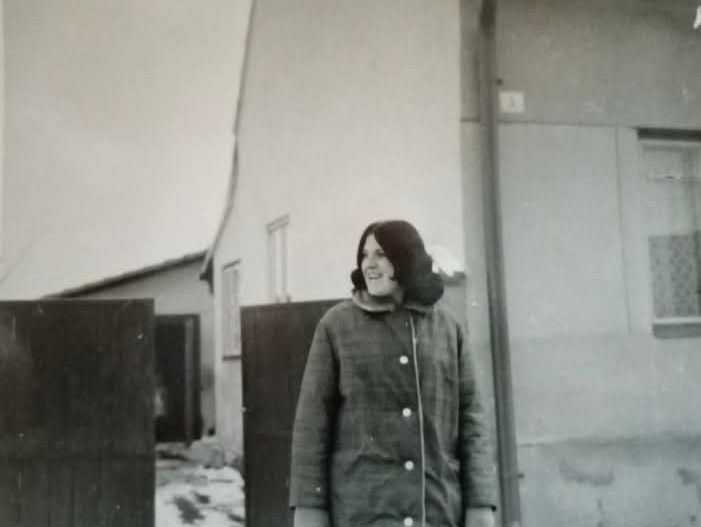
Před stavením
Portrét všedního dne na návsi či ve dvoře.
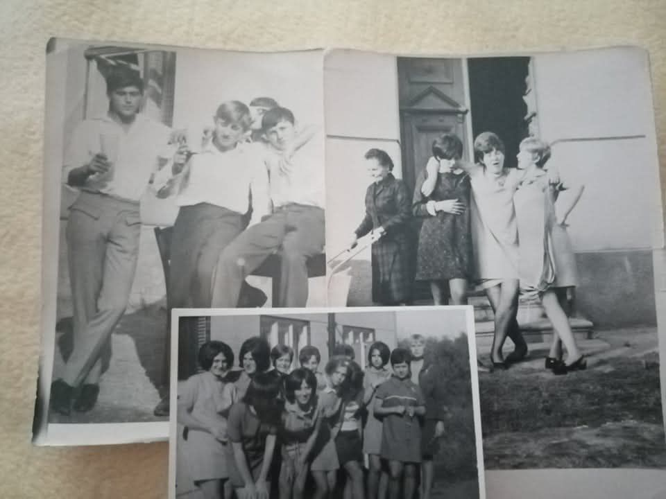
Koláž vzpomínek
Více okamžiků pohromadě jako ve skutečném albu.
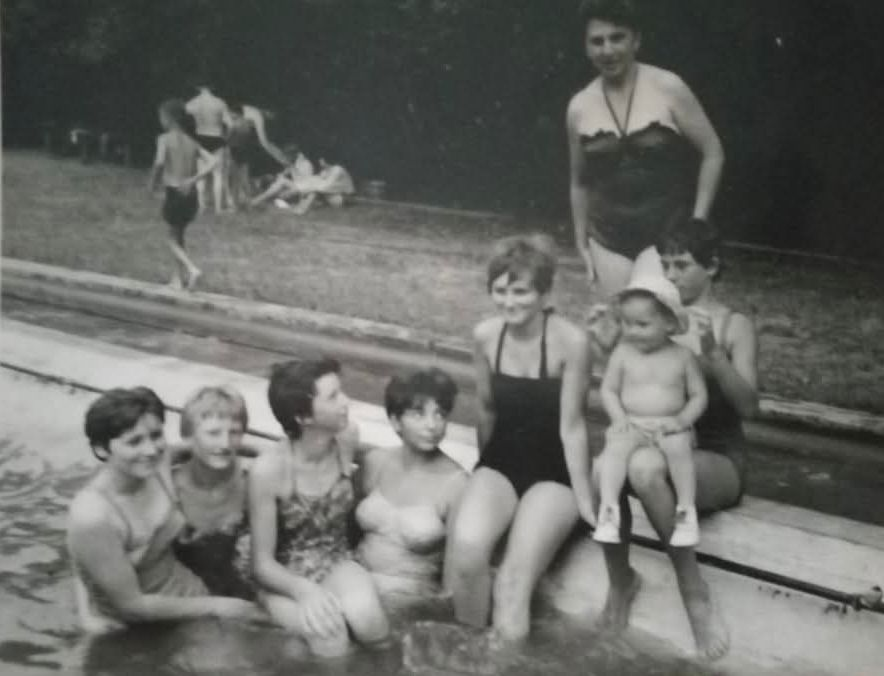
Letní koupání
Společný snímek s neformální a veselou náladou.
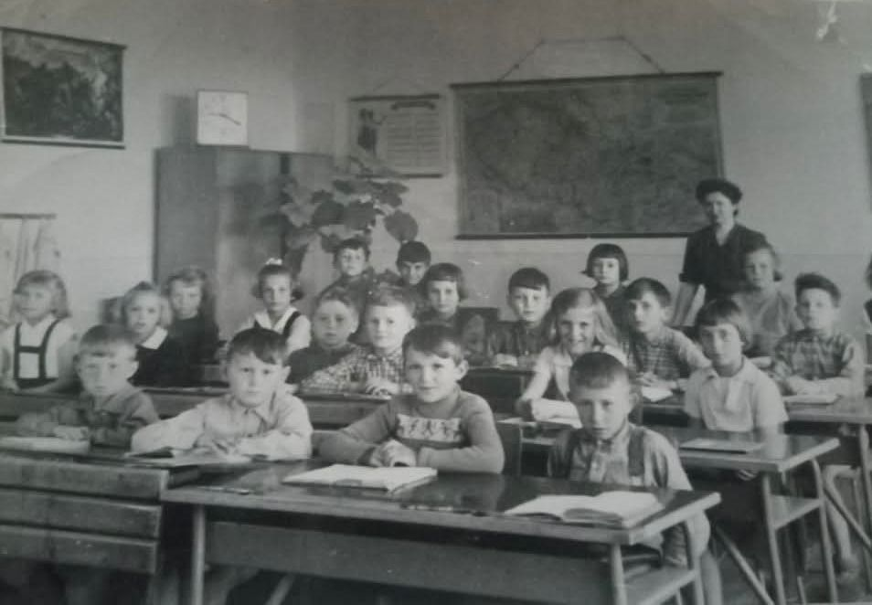
Školní třída
Cenný dokument školního života a místní paměti.
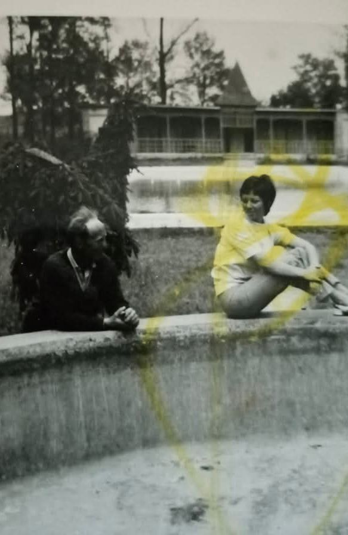
U bazénu
Prostor, který dnes působí téměř jako ztracené místo.
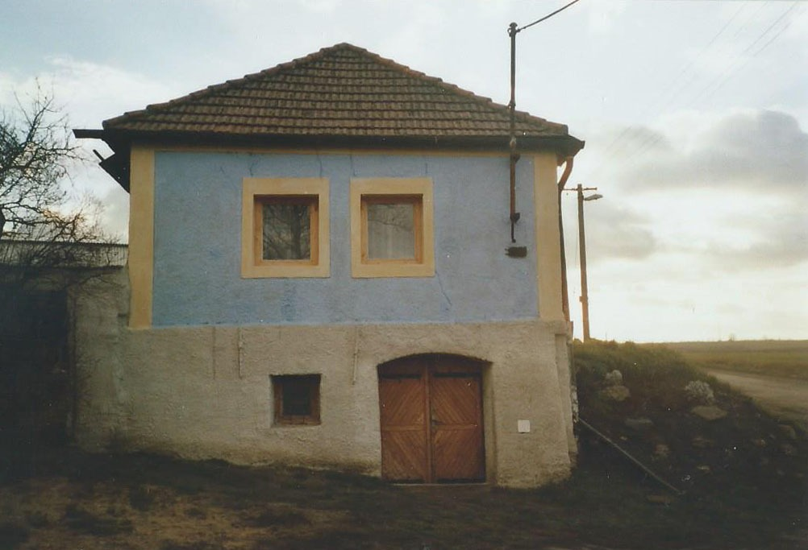
Modrý dům
Samostatný záběr stavby s tichou venkovskou atmosférou.
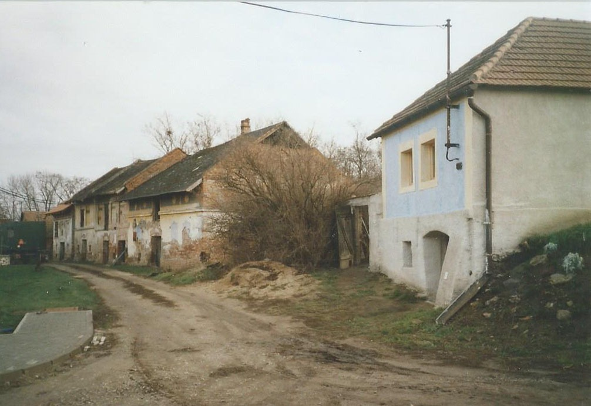
Ulička s domy
Dokument místa, které si zaslouží paměť i příběh.
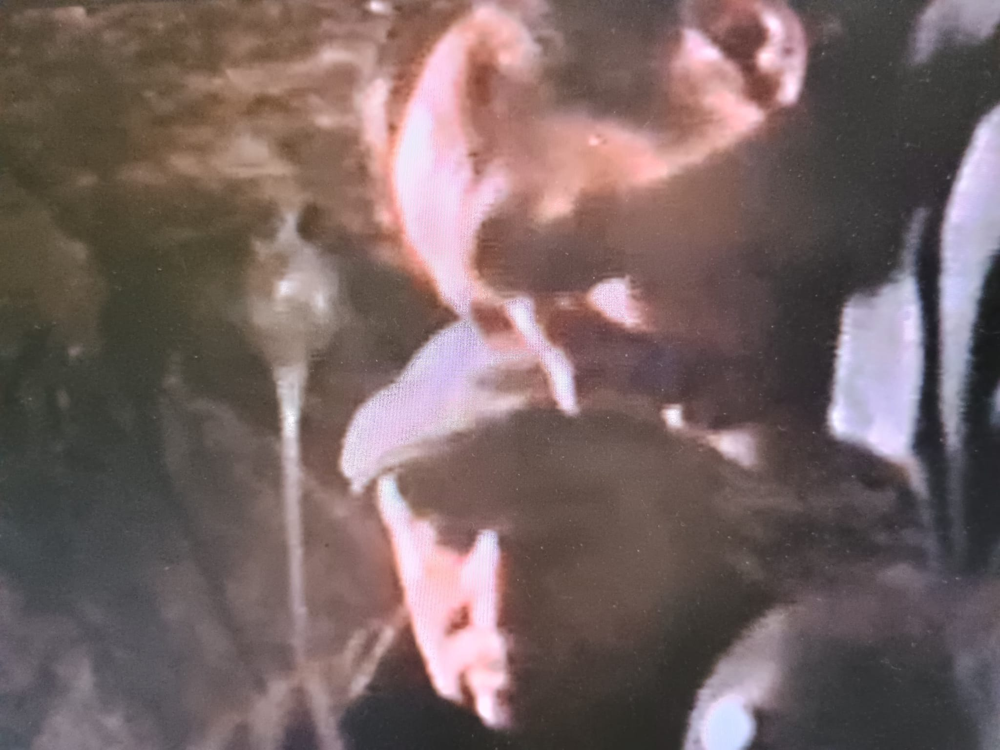
Ve sklepě či v podzemí
Záběr s výraznou dokumentární a téměř filmovou náladou.
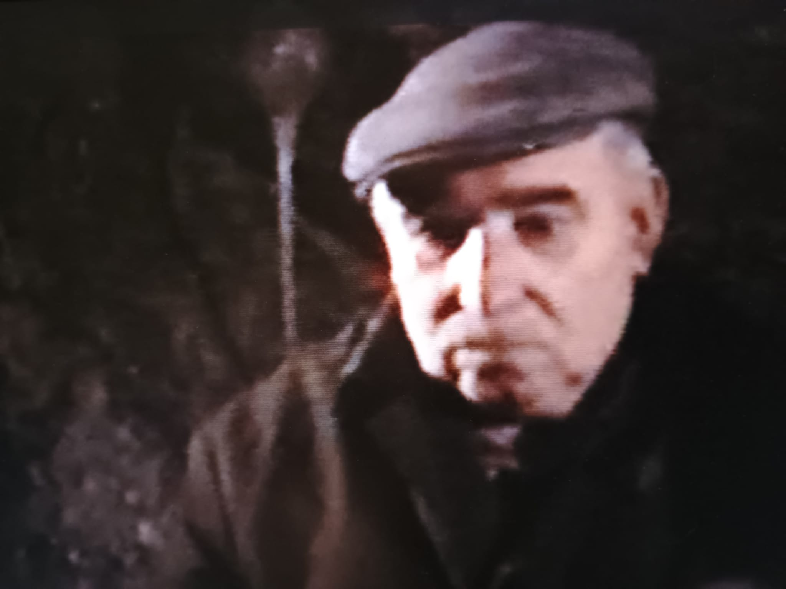
Portrét muže
Silná tvář a přímý pohled jako z ústní historie.
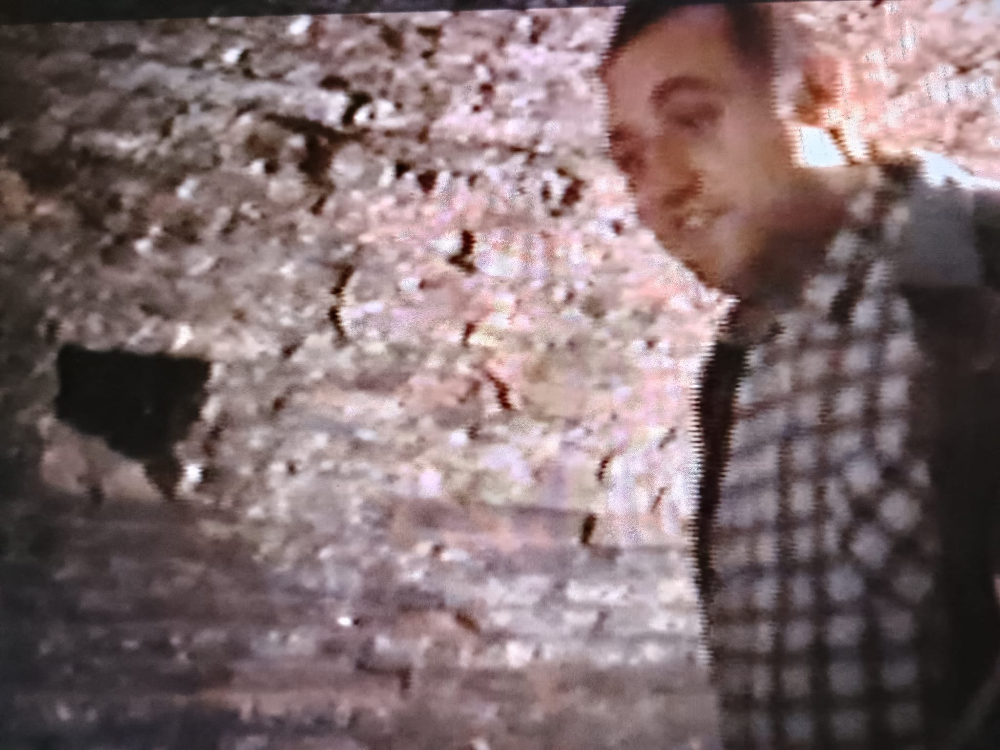
U kamenné zdi
Moment z prostředí, které může patřit ke sklepu či starému domu.
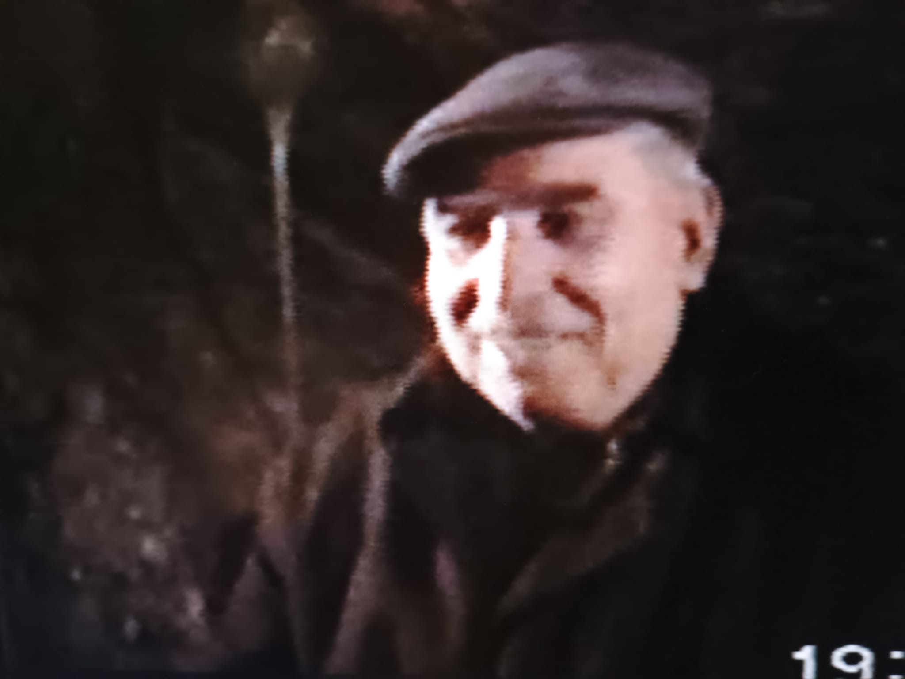
Úsměv na závěr
Fotografie, která působí jako tiché uzavření celé série.